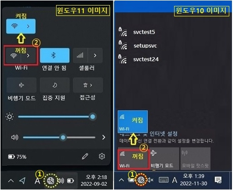
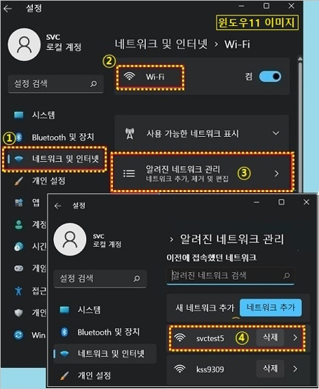
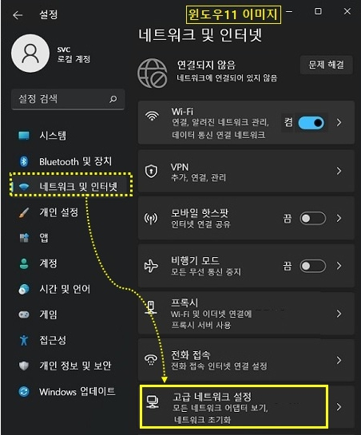
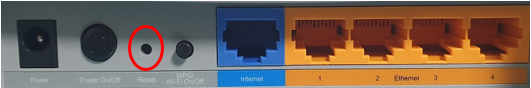
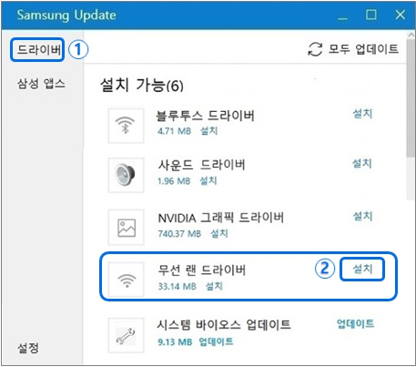

삼성 노트북 와이파이 연결 안 될 때, 공식 조치 순서
노트북을 켰는데 와이파이 목록이 통째로 안 보일 때가 있어요. 분명 비밀번호를 맞게 넣었는데 연결이 자꾸 끊기기도 해요.
삼성 노트북 와이파이 연결이 안 될 때는 공식이 안내하는 여섯 단계가 있어요. 재부팅부터 드라이버 재설치까지, 순서대로 짚어보면 돼요. 순서를 건너뛰지 않고 하나씩 확인하는 게 핵심이에요.
이 글은 삼성 노트북, 윈도우 10과 11 기준으로 정리했어요. 윈도우 8.1 이하는 일부 단계에서 조작 방법이 달라서 해당 부분에 따로 적어뒀어요. 삼성서비스 공식 홈페이지 2026.08.13 기준으로 확인한 내용이에요.
여섯 단계, 순서가 있어요
삼성서비스 공식 안내를 보면 확인 순서는 총 여섯 단계예요.
- Shutdown 명령어로 재부팅해서 확인하기
- 무선랜(Wi-Fi) 켜짐 상태 확인하기
- 무선 AP(SSID) 연결 정보 삭제 후 재연결하기
- Windows 설정에서 네트워크 초기화하기
- 공유기(모뎀) 리셋 점검하기
- 무선랜 드라이버 재설치하기(Samsung Update)
순서대로 하나씩 확인해볼게요.
재부팅부터, 와이파이 켜짐 상태까지
가장 먼저 컴퓨터를 완전히 껐다가 다시 켜보는 게 첫 번째예요.
Windows 로고 키와 R 키를 같이 눌러 실행 창을 열어요. Shutdown -s -t 0을 입력한 뒤 엔터를 누르면 돼요. Shift 키를 누른 채로 전원 버튼을 길게 눌러도 같은 방식으로 완전히 꺼져요.
재부팅해도 그대로면 이번엔 와이파이 자체가 켜져 있는지부터 봐요.
윈도우 10과 11은 작업표시줄 오른쪽 트레이의 인터넷 아이콘을 눌러요. 와이파이가 꺼짐으로 돼 있는지 확인해요. 꺼져 있으면 켜짐으로 바꾼 뒤 공유기 연결이 되는지 확인하면 돼요. 윈도우 8.1 이하는 Fn 키를 누른 채로 F12나 F9를 눌러 무선랜을 켜고 끌 수 있어요.

작업표시줄 트레이의 와이파이 켜짐·꺼짐 상태
출처: 삼성서비스 공식 홈페이지
작업표시줄에 와이파이 아이콘 자체가 안 보이면 네트워크 연결 창을 직접 열어봐요. Windows 로고 키와 R 키로 ncpa.cpl을 입력하면 돼요. 여기서 와이파이가 사용 안 함이면, 마우스 오른쪽 버튼으로 눌러 사용으로 바꾸면 돼요.
무선 항목 자체가 안 보이면 장치관리자를 열어봐요. Windows 로고 키와 X 키를 누르면 바로 열려요. 네트워크 어댑터에 노란 느낌표가 있는지 확인해요. 느낌표가 있으면 6단계 드라이버 재설치로 바로 넘어가도 돼요.
여기까지 해도 인식이 안 되면 다음 단계로 넘어가요. 연결 상태가 인증 시도 중이나 식별되지 않은 네트워크로 떠도 마찬가지예요.
저장된 와이파이 정보부터 지우고, 안 되면 초기화까지
저장된 무선 AP 연결 정보를 지우고 다시 연결하면 대부분 풀려요. 인증 시도 중이나 식별되지 않은 네트워크로 계속 뜰 때 이 방법을 써요.
무선 AP(SSID)는 노트북이 기억하는 공유기 하나하나의 이름이에요.
윈도우 11은 설정에서 네트워크 및 인터넷을 눌러요. 와이파이로 들어가 알려진 네트워크 관리를 열면 돼요. 문제가 있는 무선AP 이름을 찾아 삭제를 누르면 돼요.

설정 › 네트워크 및 인터넷 › Wi-Fi › 알려진 네트워크 관리 화면
출처: 삼성서비스 공식 홈페이지
윈도우 10도 경로와 메뉴 이름이 모두 똑같아요. 윈도우 7은 제어판의 네트워크 및 공유 센터에서 무선 네트워크 관리로 들어가요. 해당 SSID를 찾아 제거하면 돼요.
지워도 걱정할 건 없어요. 같은 와이파이 비밀번호로 다시 연결하면 정보가 새로 저장돼요.
삭제 후 재연결해도 그대로면, 이번엔 네트워크 설정 자체를 초기화해봐요.
윈도우 11은 설정에서 네트워크 및 인터넷을 누르고 고급 네트워크 설정으로 들어가요. 네트워크 초기화에서 지금 다시 설정을 누르면 돼요. 확인 팝업에서 예를 선택하고, 로그오프 안내창에서 닫기를 누르면 컴퓨터가 다시 시작돼요.

설정 › 네트워크 및 인터넷 › 고급 네트워크 설정으로 들어가는 경로
출처: 삼성서비스 공식 홈페이지
윈도우 10은 설정에서 네트워크 및 인터넷의 상태 탭으로 들어가요. 네트워크 초기화를 누르면 같은 순서로 진행돼요.
윈도우 8.1 이하는 이 기능이 아예 없어요. 대신 장치관리자에서 무선랜 장치를 제거해요. 이때 드라이버 삭제 체크박스는 누르지 않고 제거만 해요. 그 상태로 재부팅하면 무선랜이 다시 설치돼요.
네트워크 초기화는 되돌리기 버튼이 따로 없어요. 진행 전에 지금 쓰는 와이파이 비밀번호를 알고 있는지만 미리 확인해두면 마음이 편해요.
재부팅 후에도 안 잡히면, 이번엔 노트북이 아니라 공유기 쪽을 봐요.
공유기(모뎀) 자체도 확인해봐요
노트북 쪽 설정을 다 확인했는데도 안 되면 공유기 문제일 수 있어요.
먼저 램프 상태를 봐요. 전원 램프가 따로 있는 제품은 최소 3개는 켜져 있어야 정상이에요. 전원 램프가 없는 제품은 최소 2개 이상이면 돼요.
램프가 하나도 안 켜져 있으면 전원 케이블과 멀티탭 전원부터 확인해요.
- 전원 케이블 분리 리셋: 케이블을 뽑았다가 10초 뒤 다시 꽂고, 1분 정도 기다린 뒤 연결을 확인해요.
- 리셋 버튼 이용: 공유기 뒷면 Reset 구멍을 볼펜 등으로 5초 정도 눌렀다 떼고, 2~3분 뒤 연결을 확인해요.

공유기 뒷면 Reset 버튼 위치, 제품마다 모양은 달라요
출처: 삼성서비스 공식 홈페이지
공유기를 리셋하면 지금 연결된 유선과 무선 기기가 한꺼번에 끊겨요. 다른 가족이 인터넷을 쓰고 있진 않은지 확인하고 진행하는 게 좋아요.
리셋 후에도 그대로면 마지막으로 무선랜 드라이버를 다시 깔아봐요.
마지막은 무선랜 드라이버 재설치예요
여기까지 해도 안 잡히면 무선랜 드라이버 자체를 지우고 새로 깔아야 할 가능성이 커요.
문제는 와이파이가 안 되니 드라이버를 인터넷으로 받기도 어렵다는 점이에요. 삼성 휴대폰의 USB 테더링으로 우회할 수 있어요.
휴대폰을 노트북 USB 단자에 연결해요. 휴대폰 설정의 연결 메뉴에서 모바일 핫스팟 및 테더링을 찾아요. 그 안의 USB 테더링을 켜면 인터넷이 잡혀요.
인터넷이 연결되면 Windows 로고 키와 Q 키로 검색창을 열어요. Samsung Update를 찾아 실행하면 돼요. 드라이버 탭에서 무선랜 드라이버 옆의 설치를 누르면 돼요.

Samsung Update 드라이버 탭에서 무선랜 드라이버 설치
출처: 삼성서비스 공식 홈페이지
시스템 재시작이 필요하다는 메시지가 뜨면 확인을 눌러 재부팅하면 설치가 끝나요.
테더링할 휴대폰이 없다면 다른 방법도 있어요. 인터넷이 되는 다른 PC에 USB 메모리를 꽂아요. Samsung Update의 설정에서 다운로드 메뉴로 들어가요. 모델명과 윈도우 버전을 골라 무선랜 드라이버를 저장해요. 그 USB를 노트북에 옮겨 inst.exe 파일을 실행하면 돼요.
윈도우 8.1 이하는 Samsung Update 구버전에서도 가능해요. 설치 및 업데이트 메뉴에서 같은 작업을 하면 돼요.
드라이버 재설치는 기존 설정을 지우는 절차가 아니라 새로 깔아서 문제를 고치는 과정이에요. 따로 되돌릴 일은 없어요.
삼성서비스는 "안내해드린 방법으로 조치가 안된다면 전문 엔지니어를 통해 점검을 받아보시기 바랍니다"라고 안내해요.
여섯 단계를 다 해봐도 그대로면 혼자 붙잡고 있기보다 서비스센터 문의가 빨라요.
자주 묻는 질문
Q. 6단계까지 다 해봐도 와이파이가 안 잡히면 어떻게 하나요?
공식 문서는 이 순서로 조치해도 안 되면 전문 엔지니어 점검을 받아보라고 안내해요. 혼자 씨름하기보다 서비스센터에 문의하는 게 정확해요.
Q. 윈도우 8.1보다 낮은 버전도 순서가 똑같나요?
큰 흐름은 같지만 일부 단계 조작법이 달라요. 4단계 네트워크 초기화 기능은 윈도우 10과 11에만 있어요. 8.1 이하는 장치관리자에서 무선랜 장치를 지웠다가 다시 설치하는 방식을 대신 써요.
참고한 곳
· 삼성서비스 - 무선 인터넷(Wi-Fi) 연결이 안 될 경우 조치 방법
하루 정리
· 순서는 재부팅 → 와이파이 확인 → AP 삭제 → 초기화 → 공유기 리셋 → 드라이버 재설치, 이 순서가 제일 빨라요.
· 인증 시도 중이나 식별되지 않은 네트워크로 뜬다면 3단계부터 시작해도 돼요.
· 네트워크 초기화 전에는 와이파이 비밀번호만 미리 확인해두면 돼요.
· 여섯 단계를 다 해봐도 안 되면 서비스센터에 맡기는 쪽이 시간을 아껴요.